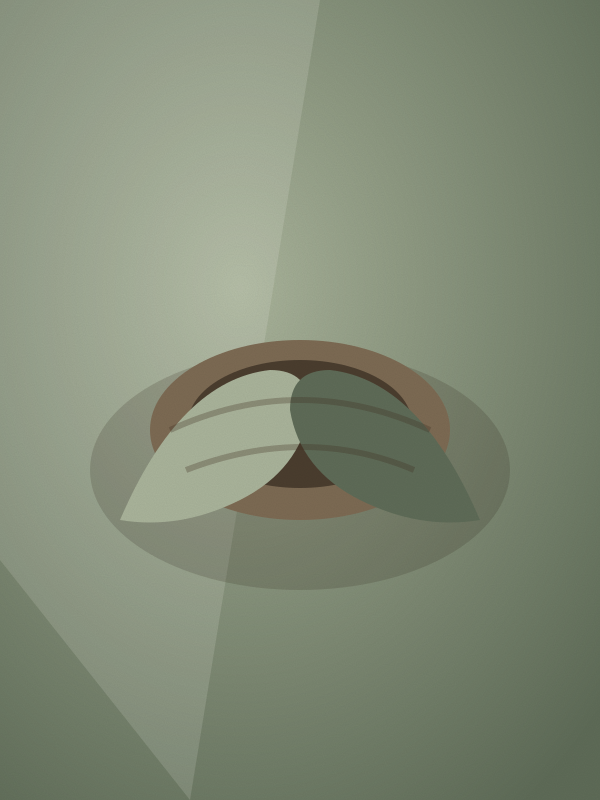
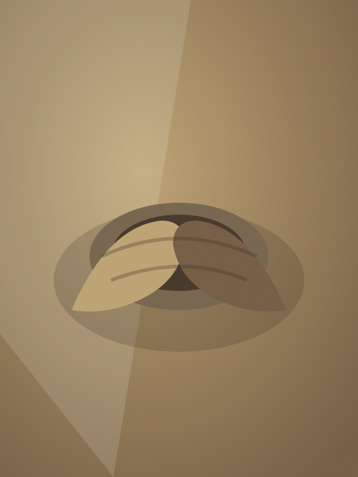

Rukmini Devi
Twenty-two years at the wheel. She fires a shared anagama kiln twice a year with the Kutch Potters' Collective, and lets wood ash do the glazing.
The clay comes from a dry riverbed an hour from Bhuj. Rukmini digs it in winter, spreads it to weather, then treads it with her feet until it will hold a wall thin enough to ring. She learned this from her grandmother, who made only water pots — wide-mouthed, unglazed, meant to sweat and keep a household's water cool through the Kutch summer.
She still makes those. But over twenty-two years her work has grown taller and quieter: storage jars, lidded vessels, forms with no function but to sit in a room and hold light. The change came when the collective built its anagama kiln in 2009 — a long, wood-fired tunnel that six families share. Firing it takes four days and four nights of feeding timber in shifts. What comes out cannot be planned. Ash lands where it lands, melts into glaze, and runs.
"I set the form," she says. "The fire finishes it. My job is to make something worth the wood." Her process film, verified by Provenance, follows a single jar from riverbed clay to the moment the kiln is unbricked.
 Process film · 6 min · verified by Provenance
Process film · 6 min · verified by Provenance
How the jar is made
Stills pulled from the verified film. No follower counts, no likes — only the record of the work.



